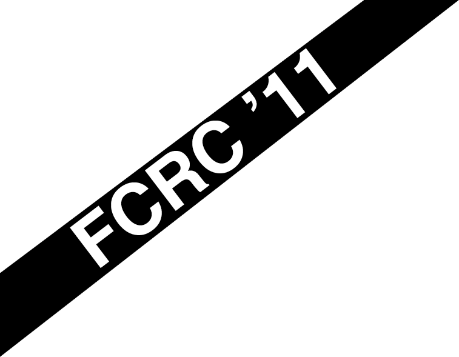

SNC 2011
Important Dates
| Submission deadline: | March 23, 2011 (CLOSED) |
| Notification: | April 15, 2011 |
| Camera-ready version due: | May 6, 2011 (CLOSED) |
| Workshop: | June 7–9, 2011 |
| Program: | Program |
Theoretical Computer Science Special Issue
This special issue will include selected refereed papers on Symbolic and Numerical Computation presented at the SNC 2011 conference as well as other relevant papers in this subject area.
More information on the call for paper.
Submission Instructions
SNC 2011 invites the submission of original research contributions to be considered for publication and presentation at the conference. Papers should not duplicate work published or submitted for consideration elsewhere prior or in parallel to the SNC submission.
Papers must be in English and shall be reviewed by the Program Committee and external referees. Submissions should be in the form of abstracts (2 pages) or full papers (up to 10 pages) in the ACM sig-alternate.cls style (see http://www.acm.org/sigs/publications/proceedings-templates). Submission is exclusively via EasyChair. At least one author of each accepted paper must register for the conference to present the paper.
Conference e-proceedings will be published by ACM and also be in the ACM Digital Library.
In keeping with tradition of previous SNC conferences, a special issue of the journal Theoretical Computer Science (TCS) is planned for after the conference. SNC 2011 speakers will be able to submit full papers to the special issue. The specifics of submission to the special issue, the names of the Guest Editors, as well as the relevant deadlines will be announced at the conference.
Jenks Prize
The 4th Richard D. Jenks Memorial Prize for Excellence in Software Engineering for Computer Algebra will be awarded at ISSAC/SNC 2011 at the FCRC http://www.acm.org/fcrc/ in San Jose on June 9, 2011.
| Nominations deadline: | Friday, April 15, 2011, 23:59 EDT |
More informations can be found on the call for nominations.
Overview
Algorithms that combine techniques from symbolic and numeric computation have been of increasing importance and interest over the past decade. The necessity to work reliably with imprecise and noisy data, and for speed and accuracy within algebraic and hybrid-numerical problems, has encouraged a new synergy between the numerical and symbolic computing fields. Novel and exciting problems from industrial, mathematical and computational domains are now being explored and solved.
The goal of the present workshop is to support the interaction and integration of symbolic and numeric computing. Earlier meetings in this series include the SNAP 96 Workshop, held in Sophia Antipolis, France, the SNC 2005 meeting, held in Xi’an, China, SNC 2007 which was held in London, Canada, and SNC 2009, held in Kyoto, Japan. The 4th International Workshops on Symbolic-Numeric Computation will be held on June 7–9 at San Jose, California, as a member of the ACM Federated Computing Research Conference (FCRC).
SNC 2011 is affiliated with the 2011 International Symposium on Symbolic and Algebraic Computation (ISSAC 2011) which will be held on June 8–11, 2011 as another member of the ACM FCRC.
Conference Topics
Specific topics of SNC 2011 include, but are not limited to:
- Hybrid symbolic-numeric algorithms in linear, polynomial and differential algebra
- Approximate polynomial GCD and factorization
- Symbolic-numeric methods for solving polynomial systems
- Resultants and structured matrices for symbolic-numeric computation
- Differential equations for symbolic-numeric computation
- Symbolic-numeric methods for geometric computation
- Symbolic-numeric algorithms in algebraic geometry
- Symbolic-numeric algorithms for nonlinear optimization
- Implementation of symbolic-numeric algorithms
- Model construction by approximate algebraic algorithms
- Applications of symbolic-numeric computation: global optimization, verification, etc.